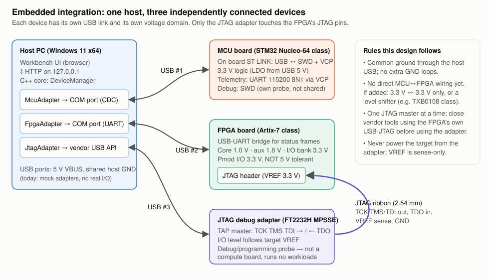

Load an STL or a nodal CSV to see it here.
Temperature (°C)
| Run the study to fill this table. |
| Run the benchmark to see timings. |
std::threads pulling case indices from an atomic counter. Each result goes to its own slot, so output order always matches input order.
Full pin/voltage table and integration plan: docs/EMBEDDED_DESIGN.md
Every gradient is negative: increasing any parameter raises ŷ towards the target (ŷ = 0.462 < 2), so gradient descent increases all four.
With one sample and enough capacity the network can fit y = 2 exactly, so the loss keeps falling towards zero; the log scale shows the steady linear-convergence rate.